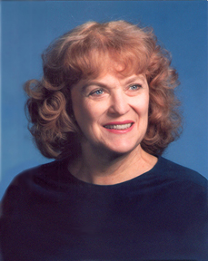

About Carma

All her life, Carma de Jong Anderson was fascinated with historical costumes. As she grew to maturity, her interest focused on clothing of the 1800s. On numerous occasions she was asked by the Church of Jesus Christ of Latter Day Saints to consult with them on the restoration of historic sites of the Church, and the dressing of the docents there who represented families of those decades.
Unfortunately, modern artists are not very familiar with authentic clothing worn by the people of the 1800s. Their paintings and illustrations often depict wild guesses as to what was worn. So Carma took it upon herself for over 40 years to travel extensively to museums, art galleries, historic sites, and to pour through images in antique books and magazines collecting detailed images of what people in the 1800s really wore. She earned a Ph.D. at BYU with a large, 3 volume doctoral dissertation showing what she had learned. Limited to a printing of only 6 three-volume copies, It was much in demand with artists in and outside of the Church of Jesus Christ LDS. She was asked to update it, enlarge it, and eventually put it online so anyone in the world could see the results of her decades of research, showing over 2000 images of correct clothing for each decade from the late 1820s to the 1870s.
This particular file deals with the 1829s to 1849s, when illustrations, paintings, and daguerreotypes were almost the only methods of visual recording from 1830 to 1860 when better means of photography became available. Each decade in this file begins with images of men and families, then women, then children, from basic clothing to hair styles to accessories. Each category begins with fashions of ordinary, laboring people, then of wealthier people. When all categories have been added to the website, anyone, anywhere will have access to authentic images of clothing of much of the 1800s.